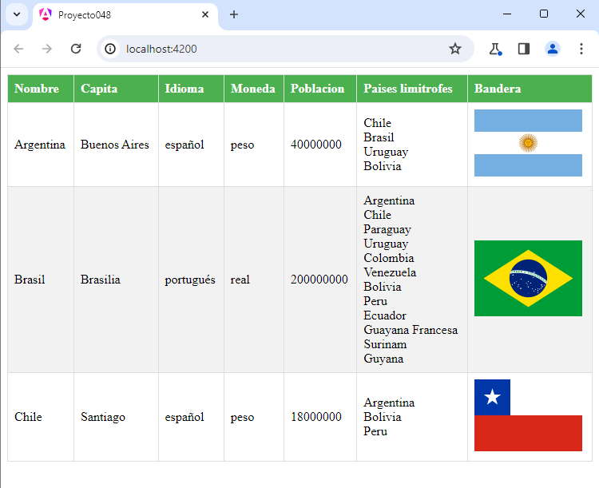

Ya hemos visto en conceptos anteriores como podemos solicitar información a un servidor utilizando la clase HttpClient, pero no habíamos visto hasta ese momento la declaración de interfaces.
La declaración de la interface nos permite en tiempo de diseño identificar errores sobre nombre de atributos en los objetos.
La siguiente URL retorna un archivo JSON con los datos de distintos países:
https://www.ejerciciostutorialesya.com/cursojs/recuperarpaises.php
Como resultado tenemos un archivo similar a:
[
{
"nombre": "Argentina",
"capital": "Buenos Aires",
"idioma": "español",
"moneda": "peso",
"poblacion": 40000000,
"bandera": "https://www.ejerciciostutorialesya.com/cursojs/imagenes/argentina.png",
"limites": ["Chile", "Brasil", "Uruguay","Bolivia"]
},
{
"nombre": "Brasil",
"capital": "Brasilia",
"idioma": "portugués",
"moneda": "real",
"poblacion": 200000000,
"bandera": "https://www.ejerciciostutorialesya.com/cursojs/imagenes/brasil.png",
"limites": ["Argentina", "Chile", "Paraguay","Uruguay","Colombia","Venezuela","Bolivia","Peru","Ecuador","Guayana Francesa","Surinam","Guyana"]
},
{
"nombre": "Chile",
"capital": "Santiago",
"idioma": "español",
"moneda": "peso",
"poblacion": 18000000,
"bandera": "https://www.ejerciciostutorialesya.com/cursojs/imagenes/chile.png",
"limites": ["Argentina","Bolivia","Peru"]
}
]
Confeccionar una aplicación en Angular que recupere los datos del servidor y los muestre en una tabla HTML.
Vamos a codificar cada uno de los pasos para resolver el problema propuesto.
El resultado final debe ser similar a:
Podemos probar esta aplicación en la web aquí.
Crearemos primero el proyecto
ng new proyecto048
Debemos modificar el archivo 'app.config.ts' para poder hacer consultas a un servidor:
import { ApplicationConfig, provideZoneChangeDetection } from '@angular/core';
import { provideRouter } from '@angular/router';
import { routes } from './app.routes';
import { provideHttpClient } from '@angular/common/http';
import { withFetch } from '@angular/common/http';
export const appConfig: ApplicationConfig = {
providers: [provideZoneChangeDetection({ eventCoalescing: true }), provideRouter(routes), provideHttpClient(withFetch())]
};
Creamos la interface con la estructura del archivo JSON:
ng generate interface Pais
Declaramos la estructura de la interface:
export interface Pais {
nombre: string,
capital: string,
idioma: string,
moneda: string,
poblacion: number,
bandera: string,
limites: string[]
}
Como podemos ver los objetos contenidos del archivo JSON quedan mapeados con los nombres de las propiedades y sus tipos de datos. nombre es de tipo string, poblacion es numeric, limites es un array de string etc.
Pasamos a crear ahora el servicio que va a emplear la clase HttpClient para comunicarse con el servidor y proceder a recuperar los datos en forma asíncrona:
ng generate service paises
El código a implementar en el servicio es:
import { Injectable } from '@angular/core';
import { Pais } from './pais';
import { HttpClient } from '@angular/common/http';
@Injectable({
providedIn: 'root'
})
export class PaisesService {
private urlApi = "https://www.ejerciciostutorialesya.com/cursojs/recuperarpaises.php"
constructor(private http: HttpClient) { }
retornar() {
return this.http.get<Pais[]>(this.urlApi);
}
}
import { HttpClient } from '@angular/common/http';
Recordemos que la clase HttpClient es un servicio proporcionado por Angular para hacer solicitudes HTTP.
import { Pais } from './pais';
Es la interfaz que define la estructura de un objeto "Pais".
constructor(private http: HttpClient) { }
Al constructor se inyecta el servicio HttpClient.
retornar() {
return this.http.get<Pais[]>(this.urlApi);
}
Este método utiliza el servicio HttpClient para realizar una solicitud GET a la URL especificada (this.urlApi).
El método devuelve un objeto de la clase Observable de tipo Pais[] (el próximo concepto ahondaremos el concepto de Observable). La notación
Este método se utilizará en una componente donde se listarán los paises recuperados.
Creamos la componente donde se mostrarán en una tabla HTML los paises:
ng generate component ListadoPaises
Codificamos la clase 'ListadoPaisesComponent' contenida en el archivo 'listado-paises.component.ts'
import { Component } from '@angular/core';
import { PaisesService } from '../paises.service';
import { Pais } from '../pais';
@Component({
selector: 'app-listado-paises',
imports: [],
templateUrl: './listado-paises.component.html',
styleUrl: './listado-paises.component.css'
})
export class ListadoPaisesComponent {
paises: Pais[] = [];
constructor(private paisesService: PaisesService) {
this.recuperar()
}
recuperar() {
this.paisesService.retornar().subscribe((paises: Pais[]) => {
this.paises = paises
});
}
}
paises: Pais[] = [];
Definimos un arreglo inicialmente vacío, que almacenará los datos recuperados del servidor.
constructor(private paisesService: PaisesService) {
this.recuperar()
}
El constructor del componente recibe el servicio PaisesService como una dependencia e invoca el método recuperar automáticamente.
recuperar() {
this.paisesService.retornar().subscribe((paises: Pais[]) => {
this.paises = paises
});
}
El método recuperar utiliza el servicio PaisesService para recuperar la lista de países. Utiliza el método retornar() del servicio, que devuelve un observable (a partir del próximo concepto veremos en profundidad la clase Observable). El componente se suscribe al observable y actualiza la propiedad paises cuando se recibe la respuesta.
Codificamos la clase la plantilla HTML 'listado-paises.component.html'
<table>
<thead>
<tr>
<th>Nombre</th>
<th>Capita</th>
<th>Idioma</th>
<th>Moneda</th>
<th>Poblacion</th>
<th>Paises limitrofes</th>
<th>Bandera</th>
</tr>
</thead>
<tbody>
@for(pais of paises;track pais.nombre) {
<tr>
<td>{{pais.nombre}}</td>
<td>{{pais.capital}}</td>
<td>{{pais.idioma}}</td>
<td>{{pais.moneda}}</td>
<td>{{pais.poblacion}}</td>
<td>
@for(limite of pais.limites;track limite) {
{{limite}}<br>
}
</td>
<td><img src="{{pais.bandera}}" alt="pais.nombre"></td>
</tr>
}
</tbody>
</table>
Codificamos la hoja de estilo 'listado-paises.component.css'
table {
width: 100%;
border-collapse: collapse;
margin-bottom: 20px;
}
th, td {
border: 1px solid #dddddd;
padding: 8px;
text-align: left;
}
tr:nth-child(even) {
background-color: #f2f2f2;
}
th {
background-color: #4CAF50;
color: white;
}
Ahora modificamos la componente principal que crea Angular por defecto 'app.component.ts'
import { Component } from '@angular/core';
import { RouterOutlet } from '@angular/router';
import { ListadoPaisesComponent } from './listado-paises/listado-paises.component';
@Component({
selector: 'app-root',
imports: [RouterOutlet, ListadoPaisesComponent],
templateUrl: './app.component.html',
styleUrls: ['./app.component.css']
})
export class AppComponent {
}
Finalmente modificamos la plantilla HTML de la componente principal que crea Angular por defecto 'app.component.html'
<app-listado-paises></app-listado-paises> <router-outlet />
Ya podemos probar nuestra aplicación en forma local:
ng serve -o
Tenemos como resultado:
Podemos probar esta aplicación en la web aquí.